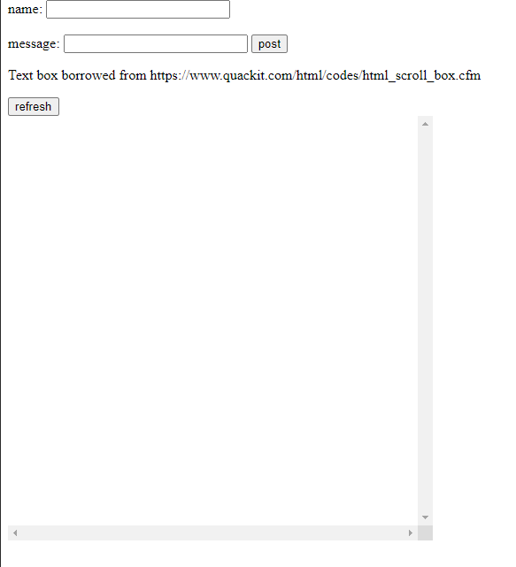
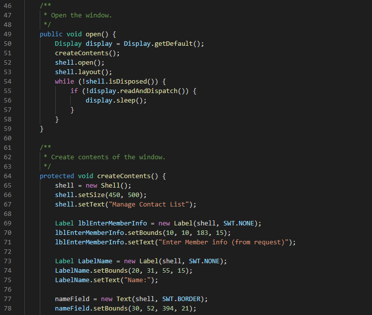

Projects
Here are the Fruits of my Labour
Projects
Here are the Fruits of my Labour
Some things I've done
Here will be a list of all projects I've made. It's empty now as this is all currently a work in progress. The projects will be split into two main groups, "Personal" and "Academic". Personal being projects I've worked on in my free time, while Academic will contain projects I've done for some classes that I'd like to highlight. Under Academic I will also be including a description of the class the project was made for.
Most of these projects can be found on my github. There is a public repository specifically for the school projects that includes content for other classes that I didn't feel were worth highlighting on this page, but are still free for people to view.
Personal
Some personal projects done in my free time. Some of which worked in collaboration with other people. A couple projects here were done out of interest for material covered in lectures, such as the SQL Desktop App
Sorting Algorithm Visualization
This project was worked in collaboration with a friend of mine, William Marks. Completed before either of us took an algorithms class, we had to do a lot of self-teaching to learn how exactly each algorithm worked. Using Processing, which is a Java based programming language with an emphasis on visualizations, we were able to create a GUI that would allow the user to see the algorithm in action. The largest challenge was definitely translating the algorithm into code that would allow us to show how each element is compared and where the elements are being moved. Of course, once we were able to do so, we felt as though we have gained a deeper understanding of the steps each algorithm used to reach the solution.
As seen in the image above, we implemented four different sorting algorithms. The user is able to reset the randomly generated list of numbers represented by the bars at the bottom half of the display.
Here, the set has been sorted. What the user would see while sorting is a red bar over the element being compared. You can run it yourself with the code in the public repository on my github, feel free to play around with the different sliders if you do!
As you can see from the sample code, the programming environment of Processing is unique compared to other text editors and IDEs. This simple design is excellent for beginner projects, which is why we chose this language for one of our earlier projects.
Home Forum System
The home forum system uses Node and Express to create the centralized server that is the back bone of the system. This project came to me while I was learning how to use Node, and has been a fun learning exeperience. Having not yet taken CPSC 441, computer networks, there was plenty to learn about http requests and other network concepts; however this didn't dissuade me from attempting this project. There is currently another version of this project that is currently in the works in a private repository, however I do not feel that it would is ready to be made public just yet.
The page was written with no CSS, as the focus of the project was on the forum and not on the design of the UI; however I do intend to include some styling the next time I work on this project. The refresh button is required to get the updated messages from the server.
Here is some of the scripting for the for the message page, mostly the refresh page function and parts of the post message function. This was also an interesting lesson on higher order functions, along with some light functional programming.
SQL Desktop App
One of the smaller personal projects, the SQL desktop app's inspiration came from a desire to create a database system for a family friend's contacts list. This coincided with the recent completion of ENSF 409, Principles of Software Development, where we were required to develop a small database management system.
For privacy reasons, I won't be able to show the results of a query. The results would typically be shown as a list in the text box at the bottom of the GUI. Requests are made by filling the first 3 text boxes associated with an attributes of the tuple being inserted or searched. The button on the right that says "Export database" is a work in progress feature that would allow the user to get a copy of the table in the form of an excel spreadsheet (This was a part of the requirements from the family friend).
Some code for the GUI, I used SWT on eclipse to aid in the creation of the GUI ( Although the code screenshot was taken from visual studio code for convenience).
Academic
These projects were some personal favourites that I either enjoyed working on, or felt that I learned a lesson that has stuck with me for my somewhat young programming career. Plenty of collaborated works, I was definitely taught important lessons on working with other people. In this tab, I'll just simply group projects into different classes, and give a brief description of the class.
CPSC 331: Data Structures, Algorithms, and Their Analysis
Definitely one of the most important classes I've taken, the content of CPSC 331 will show up in almost every computer science class I'll take from now one. Data structures and algorithms are essential for any computer science and software engineer. CPSC 331 in comparison to the other data structures and algorithms class had a greater emphasis on analysis, as seen in the name of the class. The mathematical approach to analysis has played a big role in how I approach problem solving.
Assignments
Although a majority of the assignments were focused on proofs and design, there is usually a portion that was committed to implementing an algorithm or data structure that was related to the content of the assignment. The pseudo-code or a similar algorithm is covered in class, so there was little challenge besides some mapping of pseudo-code to Java and the occasional minor mistake in the code.
The first assignment was primarily an introduction to proofs of correctness for iterative and recursive algorithms, with a minor
CPSC 355: Computing Machinery I
My first experience in assembly, and low level programming in general, CPSC 355 has further intensified my desire to understand the inner workings of the things around me. A class that drove me to look at code from a different perspective, CPSC 355 was a challenge that I personally enjoyed. To solve problems with a different set of tools that I was used to up to this point, it also gave me an appreciation for the mid to high level languages that I've been using.
Project Part 2
Final project, bomber man game written in ARMv8 assembly
CPSC 359: Computing Machinery II
The next step after CPSC 355, this class was an interesting step after assembly. Not just simply delving to a lower level of programming, we covered other interesting topics such as concurrency at a mid level language and microarchitecture. CPSC 359 wasn't focused on any specific language, but rather language-agnostic concepts.
Final Project
Frogger game written in C, missing graphics as hardware had to be returned
CPSC 441: Computer Networks
Probably the most fun I've had in a class, CPSC 441 covered plenty of interesting topics. The focus of this class wasn't on programming specifically, but rather the principles behind the protocol stack and important network concepts. What little programming that was done, was used to demonstrate our understanding of the concepts taught in lecture and reinforce our knowledge.
Assignment 1
Proxy
Assignment 2
Microservices with UDP
CPSC 449: Programming Paradigms
CPCS 449 has been one of the most interesting class I've taken so far. The concepts pushed me to think of programming in a different light. Functional and logical programming are not typically something many programmers will encounter in their lifetime; however some concepts are indeed leaking into more popular languages. Being one of the few classes that truly challenged me to write code like I've never written before, CPSC 449 was definitely an experience I will forget.
Assignment
Checkers